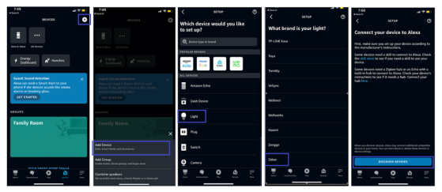
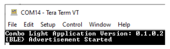
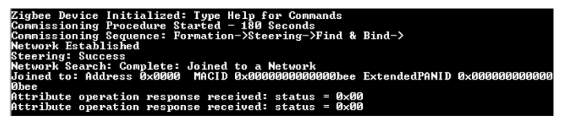
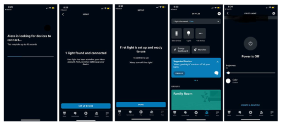
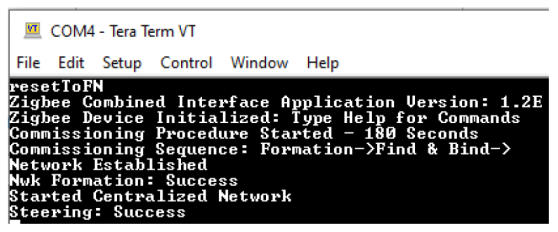
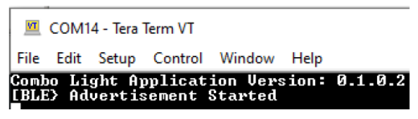
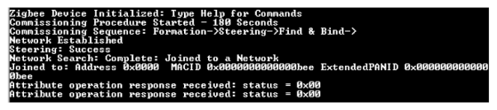
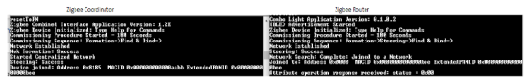
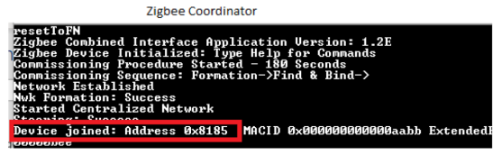
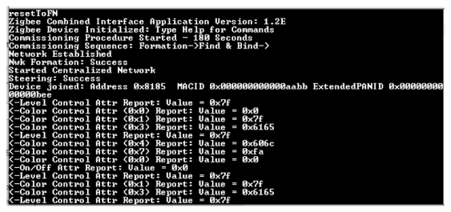

1.4 ZigBee Demo Experience
The demo consists of the WBZ451 Curiosity board with accompanying ble_zigbee_light_prov (Zigbee Router/Zigbee Lights) Firmware, the Amazon Echo or Combined Interface firmware. The Amazon Echo or Combined Interface firmware plays the role of Zigbee Coordinator. The Coordinator, upon reset, creates a Zigbee network (Network Forming) and enables permit join for 3 minutes (Network Steering). The Router upon reset, sends beacon requests looking for any existing network. If a network is found (beacon received from Zigbee Coordinator), the router will join (Network Steering) the existing network. To experience the Out of Box demo, users must reset (factory new) the Zigbee Coordinator first followed by a reset (factory new) on the Zigbee Router. After a successful connection between the Zigbee Coordinator and the router, the router starts sending attributes to the coordinator. The Coordinator can control the router's Light On/Off, level, and color.
Demo of Zigbee Lights with Amazon Echo as Coordinator
- Supply power to the WBZ451 Curiosity Board by connecting the USB cable to the kit (PC to WBZ451 Curiosity Board).
- Discovering Zigbee Lights (Using Voice Commands or the Alexa App)
-
Voice Commands
-
Ask Alexa to discover your device. Say “Discover my devices.”
-
-
Alexa App
-
From the menu, select "Add Device."
-
Select the type of smart home device “Light” and select other.
-
Initiate Discover Devices
-
Note: Echo/Alexa is in discovery mode for 45 seconds. Devices (Lights/other) wanting to join Echo must initiate joining/connecting procedure within this time limit for a successful join. -
-
Connecting Zigbee Lights (Router) to Echo (Coordinator)
- Issue Reset to factory new by pressing and holding the SW2 button for 10 second.
- Users can view the data logs for a better understanding of the demo
experience. To view the logs, open a terminal emulator like Teraterm
with the following settings:
- Speed: 115200
- Data: 8-bit,
- Parity: none,
- Stop bits: 1 bit,
- Flow control: none,
- LF+CR for tx and rx, echo enabled (Use of TeraTerm is not
mandatory to experience the demo).
The following message appears:
 - To initiate a connection, the user must press and hold the SW2 button
for 5 seconds.
- Router finds the network and joins.
Note:- Reset to factory new (using SW2 button press) will erase the Zigbee connection state stored prior to reset and bring up the device as a factory new device.
- Reset (SW1 button press) will not clear the Zigbee connection state prior to reset.
- After a successful/unsuccessful join process, users can also initiate the reset to factory new by entering the command ‘resetToFN’ over UART
- When using more than 1 WBZ451 Zigbee Light, users must reprogram the new kit with different a mac ID.
 -
Control the ON/OFF state of RGB LEDs.
- Voice commands
- Ask Alexa, “Alexa, turn on first light” to change status of RGB LED from off to on
- Ask Alexa, “Alexa, Dim first light” to reduce the brightness.
- Ask Alexa, “Alexa, Turn my first light green” to change the color.
-
Alexa App
- Select First Light in “Lights” and control
- Voice commands
Setup – Zigbee Coordinator (Combined Interface) Network Creation and Steering
Supply Power: Connect a USB cable to the WBZ451 Curiosity Board (zigbee_combined_interface)
- Open a terminal emulator like Teraterm with the following settings for both the WBZ451 Curiosity boards. USB Serial Device COMxx:
- Speed: 115200
- Data: 8-bit
- Parity: none
- Stop bits: 1 bit
- Flow control: none
- LF+CR for tx and rx, echo enabled)
Reset the board to factory new (use either step 3.a or 3.b)
Using button (SW2), press and hold SW2 button for 10 secs.
- Send “resetToFN” to Coordinator over UARTNote: Combined Interface will have permit join enabled for 180 seconds after a successful creation of centralized network. Devices (Lights/other) wishing to join the combined interface must initiate the joining/connecting procedure within this time limit in order for the join to be successful.
Zigbee Router (Lights) Setup – Connecting Zigbee Lights to the Network
Supply Power: Connect a USB cable to the WBZ451 Curiosity Board (PC to Board).
Issue Reset to factory new by pressing and holding the SW2 button for 10 seconds.
- Users can view the data logs for a better understanding of the demo experience. To view the logs, Open a terminal emulator like Teraterm with the following settings:
- Speed: 115200
- Data: 8-bit
- Parity: none
- stop bits: 1bit,
- Flow control: none, LF+CR for tx and rx, echo enabled.
The following message appears:
 To initiate a connection, press and hold the SW2 button for 5 seconds
Router finds the network and joins
- Zigbee Lights (Router) will search for an existing network to join and after joining an existing network, the finding and binding of clusters will be initiated and completedNote: Zigbee Lights(Router) will be in identifying mode and will toggle RGB LED for 3 minutes after Finding and Binding is successfulNote:
- Resetting to factory new (by pressing the SW2 button) will erase the Zigbee connection state stored prior to the reset and restore the device as a factory new device.
- Reset (SW1 button press) will not clear the Zigbee connection state prior to reset.
- After a successful or unsuccessful join process, users can also initiate the reset to factory new by entering the command ‘resetToFN’ over UART.
- When using more than 1 WBZ451 Zigbee Lights, users must reprogram the new kit with different mac ID.

Monitoring and Control Zigbee Lights (Router)
Obtain the Router's Network Address
To get the Network Address of Router, user must send the getNetworkAddress command (the must must have completed the joining process). A Command must be entered in terminal window of the Zigbee Router.
The network address is also displayed on the Zigbee Coordinator device logs.
Monitor the On/ Off status, level, and color control of Zigbee lights on the Coordinator.
- After a successful finding and binding, the coordinator device receives attributes automatically from the router periodically.
On/off control of Zigbee lights (RGB LED state)
On: Send the following command from Coordinator device over UART: onOff -s 0x8185 0x23 -on
- Off: Send the following command from Coordinator device over UART: onOff -s 0x8185 0x23 -offNote:
- "0x8185" is the address of the router (Light), the coordinator is trying to control.
- "0x23" is the zigbee endpoint of the zigbee light in control.